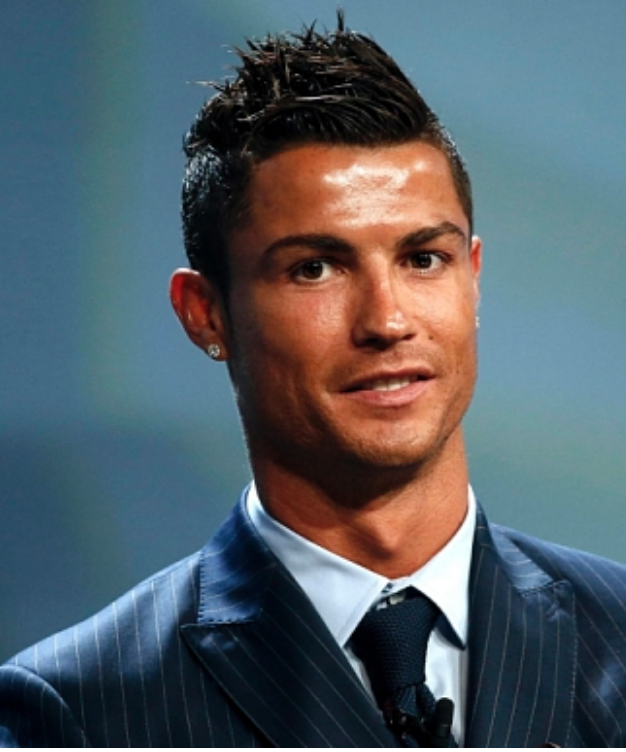

|  |
|
Криштиану Роналду(родился 5 февраля 1985, Фуншал) — португальский футболист, выступающий за испанский клуб «Реал Мадрид» и сборную Португалии. Самый дорогой футболист в истории футбола — за его переход из английского «Манчестер Юнайтед» в «Реал» было заплачено 80 млн фунтов стерлингов. Лучший бомбардир в истории сборной Португалии (55 голов). Считается одним из лучших футболистов современности. |
|
Вокруг Роналду постоянно идут какие-то обсуждения. Такова его суть, таково отношение к нему. Но в один момент приходит время, когда надо помолчать и просто посмотреть на его статистику. Нужно просто замолчать и смотреть, как он играет. То, что он вытворяет на поле — это просто безумие. Несколько лет назад Луи Саа сказал мне, что Роналду будет лучшим игроком на протяжении нескольких лет. Я ответил ему: «поживем-увидим», на что Саа вновь сказал мне: «Посмотрел бы ты, как он работает на тренировках. Это что-то невероятное» |
|
«Тренировать Роналду было лучшим в моей тренерской карьере. Это самый профессиональный футболист, которого я когда-либо знал. И я присоединяюсь к словам Карло Анчелотти о том, что Роналду — футболист другой планеты»
|